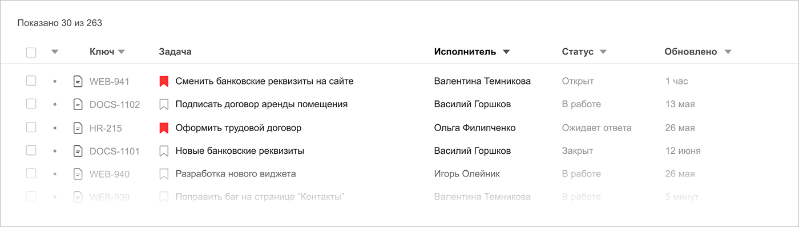
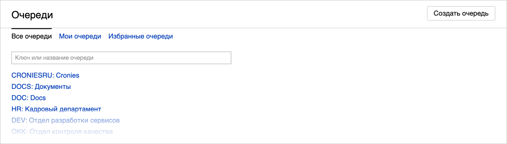
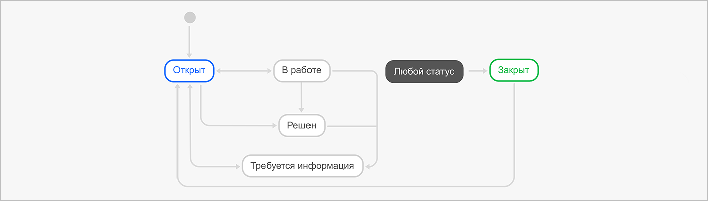

Как устроен Трекер
Трекер — сервис для управления задачами и проектами вашей организации. Он входит в состав Яндекс.Коннекта, платформы сервисов для совместной работы. Кроме Трекера в Коннект входят такие сервисы как Почта, Вики, Диск, Формы и Мессенджер. Вместе они помогут вашей команде обмениваться информацией, строить общую базу знаний, планировать задачи и отслеживать их прогресс.
Как все устроено
- Задачи
-
Основу Трекера составляют задачи. Такими задачами могут быть обращение клиента в службу поддержки, разработка нового логотипа или проведение рекламной компании. Вы можете отслеживать, как движется ход задачи от момента ее создания до завершения. Чем лучше сформулированы условия задачи и критерии ее выполнения, тем проще исполнителям будет в ней разобраться а вам — проконтролировать их.
 - Очереди
Задачи в Трекере не свалены в кучу, а распределены по потокам — очередям. Очередь — это набор задач, которые объединены общими целями и процессами. Обычно в очереди объединяют задачи определенного отдела, команды или продукта.
Например, вы можете создать очереди для отдела разработки, группы дизайна и юридического департамента. Для каждой очереди можно будет настроить особые правила доступа, назначить ответственных и выбрать подходящие воркфлоу.
Примечание. Очереди — это не проекты, для них невозможно задать даты начала или завершения работ, установить критерии выполнения. Учитывайте это, когда будете создавать свои первые очереди.
- Воркфлоу
Каждая задача на своем пути проходит через несколько этапов. Например, создание задачи, ее выполнение, согласование результатов и завершение работы. Чтобы перенести этот процесс в Трекер нужен воркфлоу — набор статусов, которые могут быть у задачи на пути от создания до решения.
Трекер подходит для работы с самыми разными задачами, поэтому мы подготовили несколько воркфлоу, которые помогут вам начать. Универсальный воркфлоу выглядит так:
- Доски задач
В Трекере есть все необходимые инструменты для работы по гибким методологиям, вроде Скрама или Канбана.

Работа с досками задач в Трекере похожа на работу с обычными досками со стикерами. Задачи на доске распределены по колонкам. Каждая колонка соответствует определенному статусу задачи. Чтобы изменить статус задачи, перенесите ее в другую колонку.